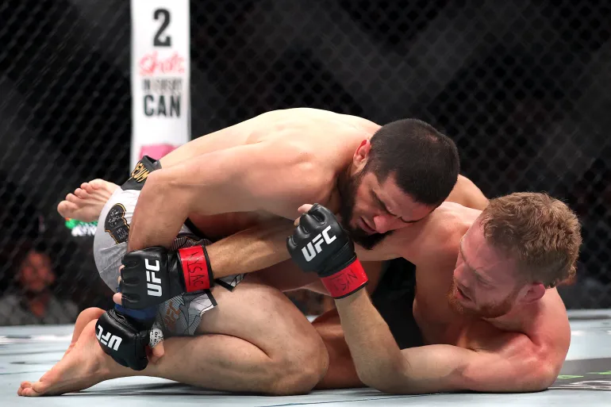
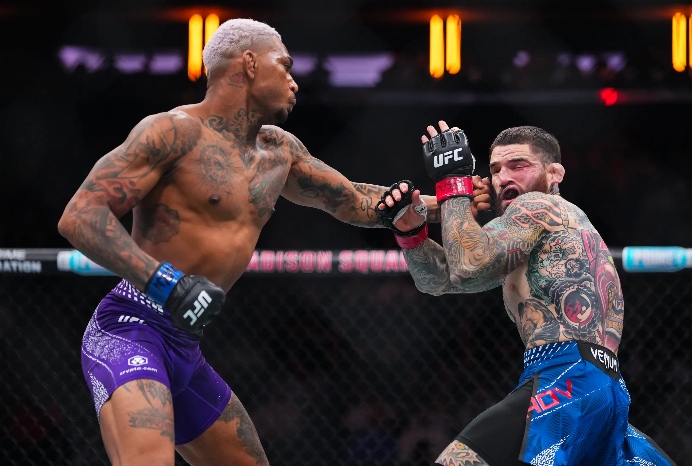

UFC 322 Della Maddalena vs. Makhachev Recap
Saturday 11.15.2025 at 06:00 PM ET • New York, New York

Table of Contents
- Summary
- Main Card
- Prelims
- Bo Nickal vs. Rodolfo Vieira
- Gregory Rodrigues vs. Roman Kopylov
- Erin Blanchfield vs. Tracy Cortez
- Ethyn Ewing vs. Malcolm Wellmaker
- Kyle Daukaus vs. Gerald Meerschaert
- Pat Sabatini vs. Chepe Mariscal
- Fatima Kline vs. Angela Hill
- Baisangur Susurkaev vs. Eric McConico
- Matheus Camilo vs. Viacheslav Borshchev
Summary
UFC 322 delivered a night of electrifying highs and frustrating lows inside a sold-out Madison Square Garden. The card was a true rollercoaster, featuring stunning knockouts, career-resurrecting performances, and a changing of the guard at Welterweight, before ultimately being bogged down by a pair of plodding, wrestling-heavy title fights that sapped the energy from the historic arena.
The evening kicked off with a statement performance from Bo Nickal, who silenced many doubters with a dramatic third-round head kick knockout of Rodolfo Vieira. Nickal showed vastly improved striking to complement his elite wrestling, culminating in a highlight-reel finish that announced his true arrival in the Middleweight division. This set the tone for a prelims and early main card slate that was filled with action.
The Welterweight division was turned on its head with two shocking results. First, Michael Morales solidified his status as a legitimate threat by starching the red-hot Sean Brady with a first-round knockout, brutally halting Brady's title aspirations. Then, the explosive Carlos Prates continued his meteoric rise, chopping down and finishing the former champion Leon Edwards with a blistering straight left in the second round. In the Lightweight division, Benoit Saint-Denis needed just 16 seconds to flatline Beneil Dariush with a left hook, likely signaling the end of the road for the veteran Dariush.
However, the momentum came to a screeching halt in the co-main event. Champion Valentina Shevchenko successfully defended her Flyweight title against strawweight champ Weili Zhang, but did so with a conservative, grinding gameplan that involved incessant takedowns and top control with minimal damage. The "lay-and-pray" strategy, while effective, made for a painfully dull affair that left fans audibly frustrated.
This frustration was compounded in the main event. Islam Makhachev achieved his goal of becoming a two-division champion by dethroning Welterweight king Jack Della Maddalena. Makhachev's control was undeniable, as he repeatedly took JDM down and smothered him for the majority of the fight. Yet, much like the co-main, a lack of aggressive submission hunting or damaging ground-and-pound made for a tactical but underwhelming spectacle, with Makhachev content to secure positions and ride out the rounds.
In the end, UFC 322 was a card of stark contrasts: a thrilling undercard that showcased the sport's brightest new stars and most dramatic finishes, overshadowed by a pair of title fights that prioritized safety over spectacle.
Final Score: 7.2/10
Main Card
Islam Makhachev vs. Jack Della Maddalena
Result: Decision, Unanimous at 5 Rounds, 25:00 Total
In a historic clash between champions carrying a combined 33-fight win streak, Islam Makhachev methodically dethroned Jack Della Maddalena to become a two-division champion and tie Anderson Silva's legendary 16-fight UFC win streak. The Dagestani lightweight king, looking to emerge from Khabib Nurmagomedov's shadow, faced the red-hot Australian who had never looked back since losing his first two professional fights years ago.

From the opening bell, the grappler vs. striker dynamic played out exactly as expected. Makhachev consistently grounded the potent boxer, smothering him against the cage and in half guard for the majority of the contest. While JDM showed impressive defensive grappling by constantly fighting hands and preventing submissions, he had no answer for the relentless takedowns. Makhachev threatened with occasional d'arce and arm triangle attempts but seemed content with positional dominance, landing only minimal damaging ground and pound. The fight's decisive factor emerged in the later rounds as Makhachev began spamming damaging leg kicks that left JDM's right calf severely compromised.
The victory was clear but underwhelming, killing the card's momentum with a tactical, safety-first approach. Makhachev's bizarre callout to fight on the "White House card" leaves his future uncertain, while JDM faces both physical recovery from his damaged leg and the mental setback of his first loss in nearly a decade. A showdown with the returning Shavkat Rakhmonov looms as a tantalizing but challenging next step for the dethroned champion.
Valentina Shevchenko vs. Weili Zhang
Result: Decision, Unanimous at 5 Rounds, 25:00 Total
The champion vs. champion superfight between flyweight queen Valentina Shevchenko and strawweight dominator Weili Zhang promised fireworks but delivered a grinding, tactical affair that left Madison Square Garden echoing with boos. Zhang, fresh off handing Tatiana Suarez her first career loss, sought to join Amanda Nunes as only the second female double-champ in UFC history.

Instead, Shevchenko executed a perfect if underwhelming gameplan, exploiting her significant size advantage from the opening bell. Whenever Zhang attempted to close the distance and engage, Shevchenko would clinch, bear-hug, and drag the fight to the canvas. For 25 minutes, the pattern repeated: Shevchenko would achieve dominant positions like side control and the crucifix, accruing control time without pursuing fight-ending damage or submissions. Zhang, visibly outsized and frustrated, grew increasingly hesitant as the fight progressed, unable to solve the wrestling puzzle presented by the larger champion.
The victory extends Shevchenko's remarkable reign but does little to bolster her legacy among fans who endured one of the most aesthetically disappointing title fights in recent memory. Her post-fight callout of Kayla Harrison seems misguided with a clear contender in Natalia Silva waiting in the wings. Zhang will likely return to strawweight to challenge Mackenzie Dern for the title she never lost in the octagon, leaving this ill-fated superfight experiment in the rearview mirror.
Michael Morales vs. Sean Brady
Result: KO/TKO, Punches at 3:27 Round 1 of 3
In a stunning upset that reshaped the welterweight landscape, undefeated prospect Michael Morales violently announced his arrival as a legitimate title threat by starching the red-hot Sean Brady. Brady entered the bout riding a three-fight win streak over top contenders including Gilbert Burns and former champion Leon Edwards, positioning himself as the undeniable number one contender before Islam Makhachev's move to welterweight created a logjam at the top.

Morales, who had already turned heads with a first-round knockout of Burns in May, showed no respect for Brady's momentum. The Ecuadorian walked Brady down from the opening bell, quickly finding his range with powerful shots over the top. A devastating right hand stumbled Brady, and Morales swarmed with killer instinct, unleashing a flurry of follow-up punches against the cage that forced the referee's intervention.
The knockout represents a brutal setback for Brady, who was potentially one win away from a title shot before Makhachev's divisional shift complicated everything. For Morales, the victory propels him from prospect to contender and places him firmly in the title picture alongside Carlos Prates. At just 25 years old and now 18-0, Morales has the look of a future champion who may have arrived ahead of schedule.
Carlos Prates vs. Leon Edwards
Result: KO/TKO, Straight Left at 1:28 Round 2 of 3, 6:28 Total
Carlos Prates continued his explosive ascent through the welterweight ranks, delivering a devastating knockout of former champion Leon Edwards that further solidifies his status as must-see television. "The Fighting Nerd" entered off a spectacular spinning elbow KO of Geoff Neal, while Edwards sought to rebound from the first finishing loss of his career against Sean Brady earlier this year.

The first round saw Edwards finding some success with takedowns and control, but Prates remained patient and composed. As the second frame began, Prates went to work systematically attacking Edwards' lead leg with sharp calf kicks. The damage quickly accumulated, compromising Edwards' mobility and creating the opening Prates needed. A picture-perfect straight left hand found its mark, sending the former champion crashing to the canvas for the knockout win.
The victory marks Prates' second spectacular finish in a row and firmly plants him in the title conversation. For Edwards, this back-to-back losing streak—the first since 2015—raises serious questions about his future at the elite level. At 32, he now enters the same uncertain territory that former champions like Israel Adesanya faced, potentially transitioning to a gatekeeper role or considering retirement after a remarkable career that saw him capture UFC gold.
Benoit Saint-Denis vs. Beneil Dariush
Result: KO/TKO, Left Hook at 0:16 Round 1 of 3

Benoit Saint-Denis needed just 16 seconds to announce his return to the lightweight elite, flattening veteran Beneil Dariush in one of the quickest knockouts of the year. Both fighters entered on redemption arcs—Saint-Denis had rebounded from back-to-back knockouts with two wins, while Dariush had finally returned to the win column in June after suffering two brutal first-round KOs of his own.
The fight ended almost before it began. BSD came out aggressively and connected cleanly with a vicious left hook on Dariush's chin immediately, sending the veteran face-first to the canvas in a frightening scene. The lightning-quick knockout raises serious concerns about the durability of Dariush, who has now been finished in the first round in three of his last four fights.
For Saint-Denis, the spectacular victory represents a third straight win and should earn him another ranked opponent, though his immediate call for a title shot seemed premature. The more pressing concern is Dariush's future—at 36 years old with a family to consider, this devastating loss may signal the end of a remarkable UFC career that saw him battle the division's best for nearly a decade.
Prelims
Bo Nickal vs. Rodolfo Vieira
Result: KO/TKO, Head Kick at 2:24 Round 3 of 3, 12:24 Total
Bo Nickal answered his critics in spectacular fashion, scoring a brutal head kick knockout over Rodolfo Vieira that showcased his evolving striking game. After being embarrassed by Reinier de Ridder earlier this year in a fight where he was a heavy favorite, the American wrestling phenom faced questions about whether he belonged among the UFC's middleweight elite.

Nickal put those doubts to rest with a complete performance. He dominated the first two rounds with a diverse striking attack, piecing up the BJJ world champion with crisp punches and kicks while mixing in his signature wrestling, including a powerful slam in the opening frame. As Vieira grew weary from the accumulated damage, Nickal feinted a level change in the third round and immediately launched a head kick that connected flush on the Brazilian's temple, knocking him out cold.
The statement victory not only silences Nickal's doubters but also demonstrates he's developing into a well-rounded mixed martial artist rather than just a elite wrestler. For Vieira, who took tremendous damage throughout the fight, this loss at 36 years old might signal the end of his run as a relevant middleweight contender.
Gregory Rodrigues vs. Roman Kopylov
Result: Decision, Unanimous at 3 Rounds, 15:00 Total
Gregory "Robocop" Rodrigues put on a dominant striking display against Roman Kopylov, earning a clear unanimous decision victory in a clash of middleweight contenders stuck outside the rankings. Rodrigues entered off a scary KO win over Jack Hermansson, while Kopylov looked to rebound from a destructive loss to Paulo Costa in July.
Rodrigues was the aggressor from the start, marching forward and consistently landing the harder, more damaging shots. He busted up Kopylov's face with powerful combinations and brutal body work, turning the fight into a one-sided beating by the second round. Kopylov showed brief moments of life in the third, wobbling Rodrigues with a left hook, but it was too little, too late against Rodrigues' relentless pressure.
The win solidifies Rodrigues' position in the middleweight division and should earn him a ranked opponent next, potentially a rematch with Roman Dolidze or another contender in the 10-15 range. For Kopylov, his hesitant, counter-striking approach cost him dearly, marking his second consecutive loss and raising questions about his ceiling in the division.
Erin Blanchfield vs. Tracy Cortez
Result: Submission, Rear Naked Choke at 4:44 Round 2 of 3, 9:44 Total
Erin Blanchfield avenged her 2019 loss to Tracy Cortez, securing a second-round submission victory in a competitive rematch that showcased her superior grappling. The #3 ranked flyweight looked to continue her climb back toward title contention after losing to Manon Fiorot in a number one contender's bout last year, while Cortez hoped to replicate her previous success against Blanchfield and potentially earn an unlikely title shot.
After a close first round fought primarily on the feet, Blanchfield turned to her grappling in the second. She successfully defended a Cortez takedown, reversed position, and eventually dragged the fight to the mat. From there, Blanchfield showcased her elite ground skills, advancing to half guard and threatening with an arm triangle before eventually taking Cortez's back and sinking in a fight-ending rear-naked choke.
While the win propels Blanchfield back into title conversation, concerns remain about her striking, which looked largely ineffective whenever the fight remained standing. With Natalia Silva likely next for the title and a recent loss to Fiorot still fresh, a matchup against former champion Alexa Grasso could make sense for Blanchfield's next step toward another title opportunity.
Ethyn Ewing vs. Malcolm Wellmaker
Result: Decision, Unanimous at 3 Rounds, 15:00 Total
Short-notice replacement Ethyn Ewing delivered a stunning "fraud check" performance, thoroughly outclassing the highly-touted Malcolm Wellmaker over three rounds. Wellmaker entered as a fighter the UFC had heavily promoted, boasting a 10-0 record with three consecutive first-round right hook KOs and two performance bonuses in his first two UFC appearances.
Ewing, taking the fight on 48 hours' notice from Uriah Faber's A1 Combat promotion, negated Wellmaker's famed power from the opening bell. He applied constant pressure and pieced up the prospect with technical combinations, mixing in takedowns and even bloodying Wellmaker with sharp elbows in the clinch. Wellmaker grew increasingly desperate as the fight progressed, loading up on power shots that consistently missed while Ewing continued to land at will.
The one-sided victory announces Ewing as a serious new threat in the bantamweight division and should earn him a permanent roster spot. For Wellmaker, the loss exposes significant holes in his game that will require addressing before he can be considered among the division's elite, proving that wins over regional-level competition don't always translate to success against technically sound UFC-caliber fighters.
Kyle Daukaus vs. Gerald Meerschaert
Result: Submission, D'arce Choke at 0:50 Round 1 of 3
Kyle Daukaus made a massive statement in his second UFC stint, submitting veteran Gerald Meerschaert with a d'arce choke in under a minute. Daukaus returned to the promotion after being cut following losses to Roman Dolidze and Eryk Anders, while Meerschaert entered riding a three-fight losing skid and fighting for his UFC career.
The end came quickly and decisively. Daukaus came out aggressively, clipping Meerschaert early and swarming with ground and pound before seamlessly transitioning to the submission that forced the tap. The emphatic victory marks Daukaus' second first-round finish since returning to the promotion and demonstrates he's a improved fighter from his first UFC run.
At 32 years old, Daukaus has positioned himself for a step up in competition in the middleweight division. For Meerschaert, the loss likely signals the end of his nine-year UFC run—a respectable career that saw him face the who's who of middleweights and serve as a durable gatekeeper for the division's rising contenders.
Pat Sabatini vs. Chepe Mariscal
Result: Decision, Unanimous at 3 Rounds, 15:00 Total
In a entertaining grappling-heavy affair, Pat Sabatini avenged his 2018 loss to Chepe Mariscal with a unanimous decision victory. Both fighters entered riding win streaks—Mariscal with eight straight including five in the UFC, and Sabatini with two consecutive victories since losing to Diego Lopes.
The fight featured thrilling scrambles and positional battles throughout, with Sabatini consistently getting the better of the exchanges on the mat. He repeatedly took Mariscal's back and secured body triangles, though he struggled to find fight-ending submissions. Mariscal showed tremendous defensive grappling and occasional striking flashes, including a head kick that opened a nasty cut on Sabatini's forehead that bled profusely throughout the fight.
While the first two rounds were competitive with exciting transitions, the third round saw Sabatini resort to lay-and-pray tactics, holding Mariscal's back without advancing or dealing damage. The victory should earn Sabatini a ranked opponent next, potentially against someone like Arnold Allen, as both fighters showed they could compete with the lower-ranked featherweights despite the anticlimactic finish.
Fatima Kline vs. Angela Hill
Result: Decision, Unanimous at 3 Rounds, 15:00 Total
Fatima Kline announced herself as a serious strawweight contender with a dominant, one-sided victory over veteran Angela Hill. The 25-year-old prospect entered with a 8-1 record and a two-fight win streak since losing her UFC debut in 2024, while Hill sought to rebound from a loss to Iasmin Lucindo in her previous outing.
Kline showcased a complete game, effortlessly taking Hill down in the first round and later piecing her up on the feet with sharp jabs, teep kicks, and combinations in rounds two and three. Her pressure was relentless, and Hill had no answer for her diverse attack, consistently whiffing on her own strikes while Kline landed at will. The victory was so dominant that one judge somehow giving a round to Hill seemed inexplicable to observers.
The performance signals the dawn of a new age in the strawweight division, as Kline should now enter the UFC rankings with a 9-1 record. Her well-rounded skills and relentless pressure make her a legitimate future threat to the top of the division, while the fight also highlighted the concerning lack of depth in the women's 115-pound class that allowed Hill to remain ranked at #11 despite her recent struggles.
Baisangur Susurkaev vs. Eric McConico
Result: KO/TKO, Right Hook at 1:38 Round 3 of 3, 11:38 Total
Highly-touted prospect Baisangur Susurkaev kept his undefeated record intact with a third-round knockout over Eric McConico, but the performance raised serious questions about his readiness for ranked competition. The Chechnyan fighter, a training partner of Khamzat Chimaev, entered with tremendous hype after scoring two wins in four days back in August—one on the Contender Series and his UFC debut days later.
For the first two rounds, Susurkaev looked anything but a -1200 favorite, struggling with McConico's clinch work and showing suspect wrestling defense and cardio. McConico arguably won both initial rounds, landing damaging elbows and controlling the action against the fence while Susurkaev appeared exhausted and out of ideas. However, Susurkaev showed his fight-ending power in the third, landing a perfect counter right hook that sent McConico crashing to the canvas in a spectacular knockout.
While the KO was highlight-reel material, the overall performance revealed significant holes in Susurkaev's game that will need addressing before he faces anyone with legitimate experience. His callout of Bo Nickal after the fight seems wildly premature—he clearly needs more developmental fights against lower-level competition before testing himself against the middleweight division's rising stars.
Matheus Camilo vs. Viacheslav Borshchev
Result: Decision, Unanimous at 3 Rounds, 15:00 Total
In a fight where both fighters' UFC futures hung in the balance, Viacheslav Borshchev did just enough to earn a unanimous decision over Matheus Camilo in a sloppy affair that did little to impress. Borshchev entered on a two-fight losing skid and likely fighting for his roster spot, while Camilo sought his first UFC win after losing his promotional debut.
Camilo started strong, landing takedowns and controlling the first round with his grappling, though his ground skills looked rudimentary as he failed to advance position or threaten submissions. As the fight progressed, Camilo's gas tank emptied dramatically, allowing Borshchev to take over in the second and third rounds. Borshchev began landing at will on the feet while easily stuffing Camilo's exhausted takedown attempts, though his own output remained inconsistent.
While the victory may have saved Borshchev from being cut, neither fighter impressed in a contest that highlighted their limitations. Camilo's one-dimensional grappling and poor cardio suggest he may not be UFC-caliber, while Borshchev's inconsistent performance against a struggling opponent raises questions about whether he belongs on the roster long-term either.